Next: About this document ...
E84 Home Work 8
- The load of a voltage soruce of
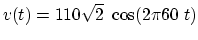
is shown in the figure, where
 , 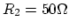, 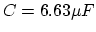,
, 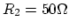, 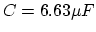,
 . Is the load capacitive (
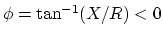) or inductive
(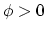)? Find the power factor, the apparent power, the real power and
the reactive power.
. Is the load capacitive (
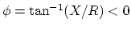) or inductive
(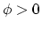)? Find the power factor, the apparent power, the real power and
the reactive power.
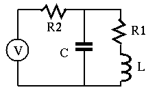
- To improve the power factor of the circuit above to 0.9, a shunt
capacitor is added. What should the capacitance
 be? What should be
if the power factor is required to be 1?
be? What should be
if the power factor is required to be 1?

- Find the Z-model and Y-model of the circuit shown in the figures, by
assuming one of the two known variables (currents or voltages) is zero at
a time. Then verify your results by checking whether
 .
.
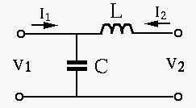
- The parameters of the Y-model of the two-port network are 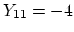,
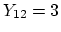, 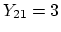, and 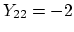. The voltage source is 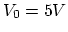,
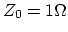, 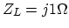. Find variables
 , 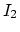,
, 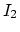,  , 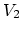.
(Hint: refer to Method 1 in the example shown in the
web notes)
, 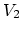.
(Hint: refer to Method 1 in the example shown in the
web notes)
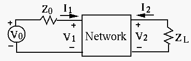
- Repeat the previous problem but this time use Thevenin's theorem to find
across load
 . (Hint: refer to Method 2 in the example shown in the
web notes)
. (Hint: refer to Method 2 in the example shown in the
web notes)
Next: About this document ...
Ruye Wang
2005-11-06